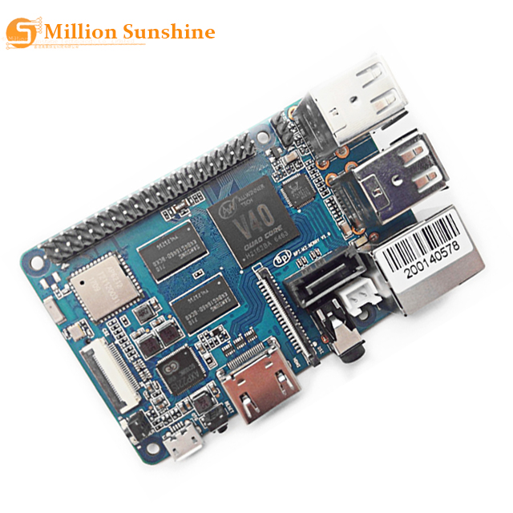
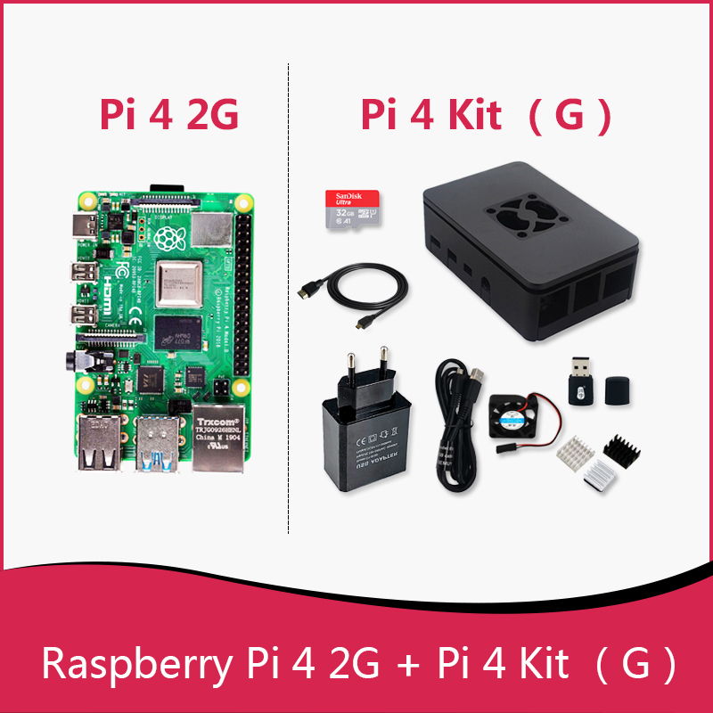
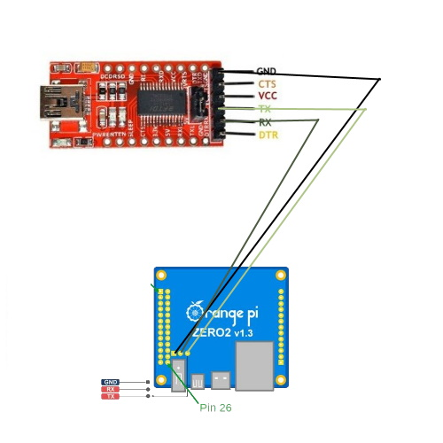

Um guia básico sobre microcomputadores. (Por Dyoniso)
Eai, resolvi criar esse blog com o objetivo de ser uma cápsula do tempo. Então espero que o conteúdo indexado aqui te ajude de alguma forma.
Quero compartilhar minha experiência de como foi trabalhar com o OrangePI. Já garanto para você que foi uma experiência única, então se você tiver a oportunidade de comprar um, não perca tempo. Rs
Mas que diabos é um OrangePI?
Um OrangePI, nada mais é que um microcomputador, onde ele executa todas as funções que um computador comum, a diferença é que o hardware é um pouco fraquinho. Então aplicativos e o Sistema Operacional tem que ser planejado de acordo com as configurações da CPU de sua placa, para evitar travamento e aquecimento do processador.
Para um desenvolvedor, é importate ter um microcomputador para testar projetos ou automatizar alguma função manual. É bem fácil e prático testar o desenvolvimento dentro de um microcomputador ao invés de forçar o hardware do seu computador a rodar um Sistema Operacional Virtual.
Separei uma Review para os interessados:
Gostou? Minerei uns links na AliExpress. De uma olhada:
Obs: Eu não estou sendo patrocinado
❝É claro que eu escolhi o modelo que tinha uma case de dissipadora de calor❞ 🗿🍷
Tem o BananaPI como alternativa:
Caso deseja investir em hardware. Seu melhor caminho será comprar um RasberryPI
Primeiro Contato ✋
A entrega foi bem rápida, no caso demorou uns 15 dias para chegar, fiz o umboxing e instalei a case. A placa usa como fonte o cabo Tipo C, ou seja o cabo que carrega os celulares mais modernos. Se o OrangePI não der sinal de vida quando liga, calma.. isso é normal, este modelo de placa apenas liga se tiver um Sistema Operacional compatível instalado.
Instalação do Sistema Operacional 🐱💻
Para instalar um Sistema Operacional no OrangePI, você vai precisar de um Cartão de Memória. O mínino de espaço recomendado para fazer o básico é de 8GBS, porém dependendo do seu projeto é melhor aumentar o limite. Com o Cartão de Memória em mãos, entre no site oficial do OrangePI , navege pela aba Service & Download > Download e escolha o modelo da sua placa, após isso selecione o Sistema Operacional de sua preferência e clique em iniciar o Download. Note que tem versão tanto para Desktop quanto para Servidor. ^^
O BalenaEtcher é um software que vamos usar para montar a imagem do Sistema Operacional que baixamos. Então após baixar a ISO, abra o Balena e selecione a ISO e o Cartão de Memória nas opções, em seguida clique no botão 'FLASH!' e espere o Balena montar a imagem da sua ISO. Com o processo concluído, coloque o Cartão de Memória no OrangePI, se tudo der certo aparecerá uma Luz Verde no final da inicialização, caso der errado, certifique-se que a ISO não está corrompida ou se o Cartão de Memória está conectado corretamente a sua placa.
Enviar dados para a OrangePI 👩💻
Conexão Serial por USB
Existem varias formas de enviar dados para o seu OrangePI, a mais eficiente é usando um módulo RS232tl, onde ele utiliza um sistema binário para transmitir dados em ACII e este código é capaz de traduzir um código legível pelos humanos em códigos legível pelos computadores. Ficou confuso para você? Básicamente você precisa de um conversor USB, para que seja possível a comunicação do OrangePI ao seu computador.
Minerei este módulo no meu porão de eletrônicos
Com o módulo em mãos, basta seguir o esquema para instalar o módulo em sua placa. 
Não sou muito bom em Design, mas da pra entender, vai. Rs
Depois de tudo conectado, procure o seu dispositivo no Gerenciador de Dispositivos do Windows, na aba de Portas (COM, LPT), escolha o dispositivo conectado e clique com botão direito, localize a opção Propriedades > Configurações da Porta e colete informações dos seguintes itens: 'Bit por segundo' e 'Nome da Porta'. (Caso não aparecer, Leita este artigo para solucionar problemas com o driver do módulo)
O Putty será o programa responsável para gerenciar sua conexão entre o seu computador e o OrangePI. Então baixe o Putty e crie uma nova conexão na aba de sessão, o tipo de conexão será 'Serial', no campo 'Serial Line' e 'Speed' coloque as informações que você coletou, após isso clique no botão 'Open' e inicie sua conexão. Caso tudo estiver certo o Putty irá solicitar o login e a senha padrão do seu OrangePI.
Login e Senha Padrão
Conexão pela Rede Local
Para se conectar usando sua Rede Local, basta inserir um Cabo de Rede no OrangePI e conectar no Roteador de Internet da sua casa. Com tudo conectado, entre com acesso 'Admin', no seu Roteador e verifique o IP dos dispositivos conectados, procure pelo nome de 'OrangePI' e colete o IP do dispositivo. Com o IP em mãos, faça um teste de PING no CMD do seu Sistema Operacional, caso tudo estiver certo, abra o Putty crie uma nova conexão na aba de sessão, o tipo de conexão será 'SSH', no campo 'Hostname' coloque o IP que você coletou e no campo 'Port' coloque a porta '22' (porta padrão do Protocolo SSH). Por fim o Putty irá solicitar o Login e Senha do seu OrangePI.
Não consigo acessar meu roteador. E agora? 😞
Calma, nem tudo está perdido, caso você não consiga acessar seu Roteador, então baixe o AngryIPScanner no seu computador e faça uma varredura em todos os IPS conectados no seu Roteador (Certifica-se de está conectado na mesma Rede que seu OrangePI). Com o processo finalizado, o programa te entregará uma lista com todas as combinações de IPS conectados na frequência -> '192.168.0.1-192.168.0.299'. Com a lista de IPS em mãos, abra um bloco de notas e separe o IPS com a cor AZUL e VERDE, após isso, baixe o Nmap e execute o programa para fazer um mapeamento de Portas com os IPS que você separou, caso alguns dos IPS estiver com a porta 22 aberta, provavelmente é o IP do seu OrangePI. Com o mapeamento de portas concluído, basta usar o Putty para conectar ao seu OrangePI.
Ficou confuso? Separei esse vídeo para facilitar:
Bom.. isso é tudo que você precisa saber por agora. Até a próxima desenvolvedor anônimo.